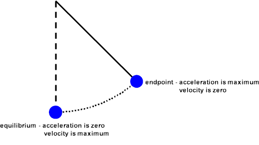

Experiment
Objective
To determine the pendulum´s acceleration from Accelerometer
Apparatus:
Sense box tool with MCU (Accelerometer sensor) as weight and string,pendulum hanger, stopwatch, and meter stick(ruler), scissor ,Adhesive tape


Procedure
Apparatus:
A simple pendulum is one which can be considered to be a point mass suspended from a string or rod of negligible mass. For Length L and Period of oscillation T can be related with Equation T = 2√L/g ; g = 4 √2 L/T2 Find the average acceleration of gravity and place the result in the proper table. Compare this experimental value of g with the accepted value of 9.80 m/s and acceleration value from Accelerometer ( MCU sensor value). Error Analysis: % error = (gavg m/s 2 - 9.80m/s 2 / 9.80 m/s 2 ) x 100 %
QUESTIONS :
How it works?:
As the Pendulum swing freely from different position and it will have some acceleration measured while swining and visualazied
MCU Pendulum:

